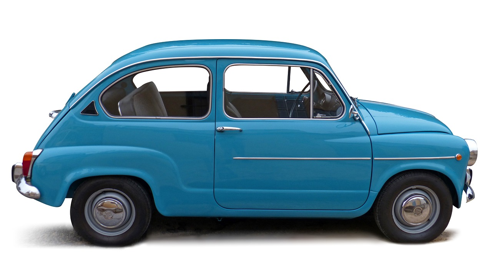

Inicialment es van importar a Espanya algunes unitats del model italià original, el Fiat 600, però aviat la fàbrica SEAT va començar la producció pròpia sobre la base d'aquest model sota acord amb l'empresa italiana Fiat. Aquest model va ser comprat principalment per la classe mitjana espanyola, que no podia accedir a vehicles de més prestacions. El 1957 es va posar a la venda a Espanya pel preu d'aproximadament 19.000 € de l'any 2018 (65.000 pessetes de l'època).
El primer exemplar va sortir de la factoria de la Zona Franca de Barcelona el 27 de juny de 1957, amb el número de bastidor 100-106-400.001, que es va donar de baixa a València el febrer de 1985. No obstant això, aquest 600 va matricular fins al 5 de desembre de 1957, amb la matrícula M-184.018. La primera unitat matriculada va ser la del bastidor número 100.106-400.071, a la província de Barcelona el 8 de juny de 1957 amb la matrícula B-141.141.

Del 600 es van fabricar diverses versions, conegudes com a 600, 600 D, 600 E i 600 L Especial sense comptar versions com la comercial, la descapotable, la Formichetta, etc. El carrosser català Costa va realitzar un disseny amb 30 cm més de batalla per dotar-lo de quatre portes laterals, que es va batejar com a SEAT 800. Va tenir relatiu èxit i va constituir una aportació espanyola als dissenys originals.